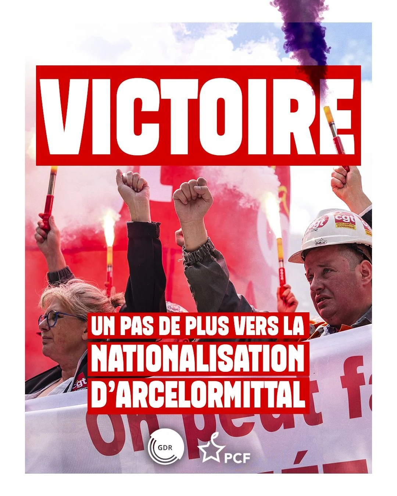

Vote à l’Assemblée nationale
ArcelorMittal, un pas de plus vers la nationalisation
Date indiquée par Facebook · 11 juin 2026
Repères éditoriaux
L’Assemblée nationale a adopté la proposition de loi de nationalisation portée par les députés communistes. C’est un point d’appui pour les salariés mobilisés pour leurs emplois et l’avenir de la sidérurgie. À ce stade, le combat devait se poursuivre au Sénat.
Texte conservé avec la publication
🔴 Nouvelle victoire !
Un pas de plus vers la nationalisation d’ArcelorMittal.
L’Assemblée nationale a adopté la proposition de loi portée par les députés communistes pour la nationalisation d’ArcelorMittal.
🚩 C’est un signal fort envoyé aux salariés mobilisés depuis des années pour défendre leurs emplois, leurs usines et l’avenir de la sidérurgie française.
Face aux logiques financières qui fragilisent notre industrie, une autre voie s’ouvre : celle de l’intervention publique, de la souveraineté industrielle et de la sécurisation de l’emploi.
✊️ Le combat continue désormais au Sénat pour transformer ce vote en réalité !

Sources
Archive rouge · export Facebook · AR-0002-FB-00756
À lire aussi · ArcelorMittal. Le PCF réagit au rejet de la proposition de nationalisation au Sénat